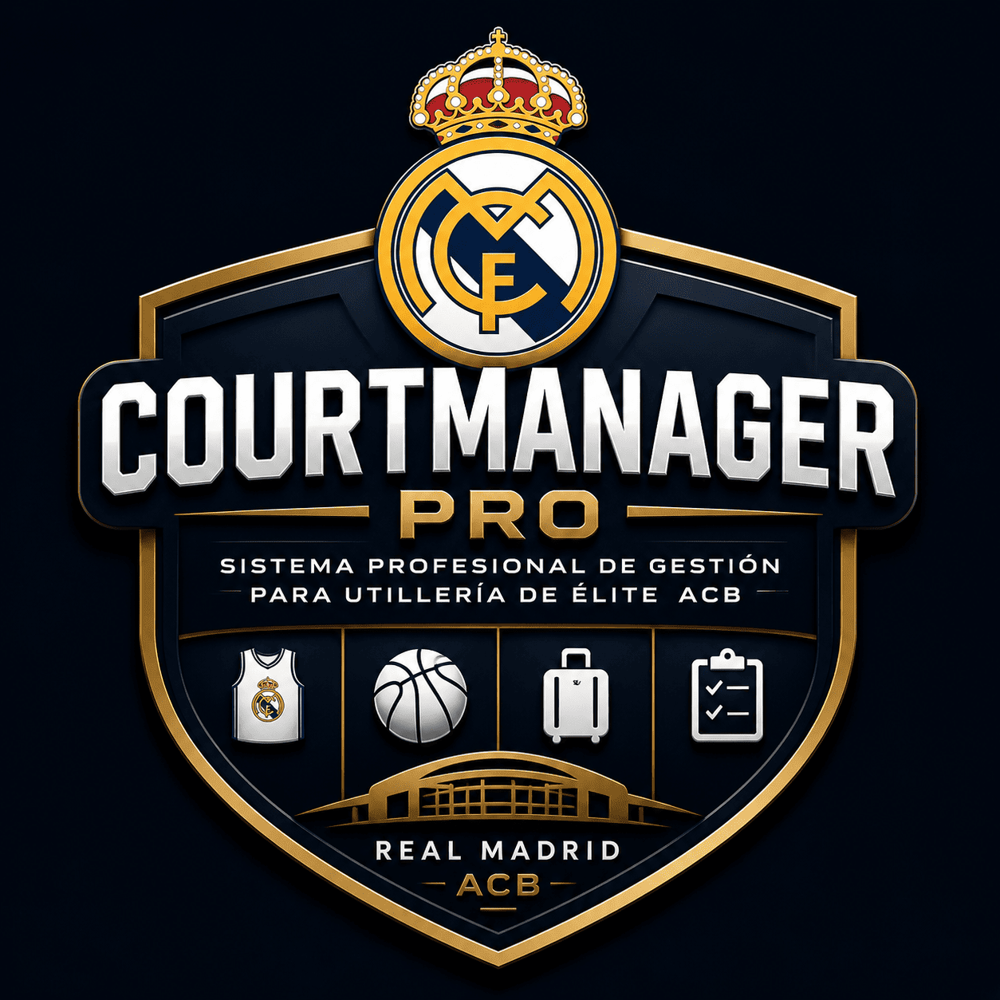

SaaS de utilería profesional para baloncesto — inventario, tallajes, viajes y logística ACB/Euroliga
Ramón del Pozo Rott · Fundador & Creador |
Carlos Rodriguez Kobe · Utilero RMB
info@ramondelpozorott.es · Junio 2026
Los clubes de élite pierden €15.000 – €30.000 al año en:
Hoy la utilería se gestiona con Excel, WhatsApp y memoria del utilero. Eso no escala.
Demo en producción con plantilla Real Madrid Baloncesto 2025/26
Stack: Next.js 15 · React 19 · Supabase · Vercel
→ courtmanagerpro.vercel.app
| Plan | Cliente | Precio/mes |
|---|---|---|
| Amateur | Cantera, escuelas | €49 |
| Pro | ACB, LEB Oro | €299 – €499 |
| Elite | Euroliga, Enterprise | €1.500 – €3.500 |
Cobro recurrente Stripe Billing · Pago fallido → suspensión automática
ROI para el club: primer mes de suscripción Pro
€1,8M ARR
500 clubes profesionales × €299/mes (solo tier Pro, conservador)
Expansión vertical: fútbol, balonmano, hockey — mismo dolor logístico
| Fase | Plazo | Objetivo |
|---|---|---|
| 1 | 0–6 meses | 3 pilotos de pago · Case study ahorro |
| 2 | 6–18 meses | ACB + LEB · Federaciones · WhatsApp Carlos |
| 3 | 18+ meses | Euroliga · App Store · IoT básculas |
| Persona | Rol |
|---|---|
| Ramón del Pozo Rott | Fundador · Creador · Producto · Superadmin · Visión SaaS |
| Carlos Rodriguez Kobe | Co-fundador operativo · Utilero RMB · UX real · Soporte |
charlie-r-k@hotmail.com · info@ramondelpozorott.es · +34 637 23 71 00
| Trimestre | Hitos |
|---|---|
| Q3 2026 | Stripe live · 3 pilotos · Informes PDF |
| Q4 2026 | 10 clubes Pro · Capacitor beta (App Store) |
| Q1 2027 | Federación · Multi-idioma |
| Q2 2027 | Tier Elite · BD dedicada · IoT básculas |
Buscamos: socio estratégico o ronda pre-seed para:
El producto no es un mockup. Es un MVP premium funcional listo para vender hoy.
CourtManager Pro — La utilería que el baloncesto profesional necesita
Demo: courtmanagerpro.vercel.app
GitHub: github.com/ramondelpozokids/courtmanagerpro
¿Preguntas?